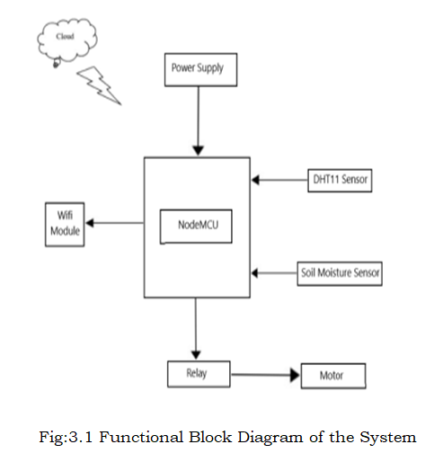
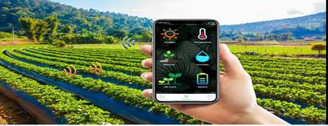

IOT BASED SMART IRRIGATION SYSTEM
To measure the continuous soil moisture, temperature and humidity of the agriculture by using Internet of Things.
To save water and reduce human intervention in the agriculture field.
To get the output of soil water Sensor and provide water to crop.

Block Diagram
The Node MCU will continuously read the Thingspeak field (Relay Data).
When Node MCU will sense that the field value goes high (logic 1), then it will energize the relay coil.
As a result, relay will short the motor circuit and water will flow to irrigate the agricultural field with efficient manner.
On the other hand, when Node MCU will sense that the field value goes low (logic 0), the reverse process will happen.

Circuit Diagram
Conclusion
We have successfully designed and implemented a smart irrigation system using the concept of Internet of Things. This automated irrigation system is easily controlled using a computer. It behave as an intelligent switching system that detects the soil moisture level and irrigates the plant if necessary. This will also save time and energy, as well as minimize energy loss. With the use of sensors whose cost is low and with simple circuitry this experiment aims in low cost solution, which can be bought even by a poor farmer and it is also easy to implement.
